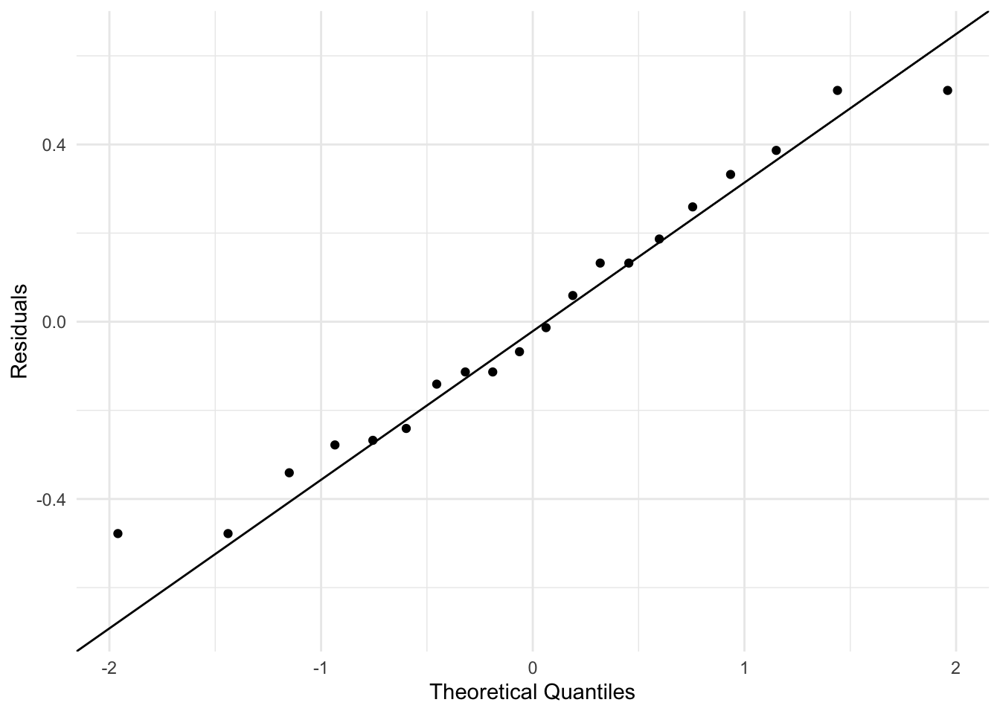
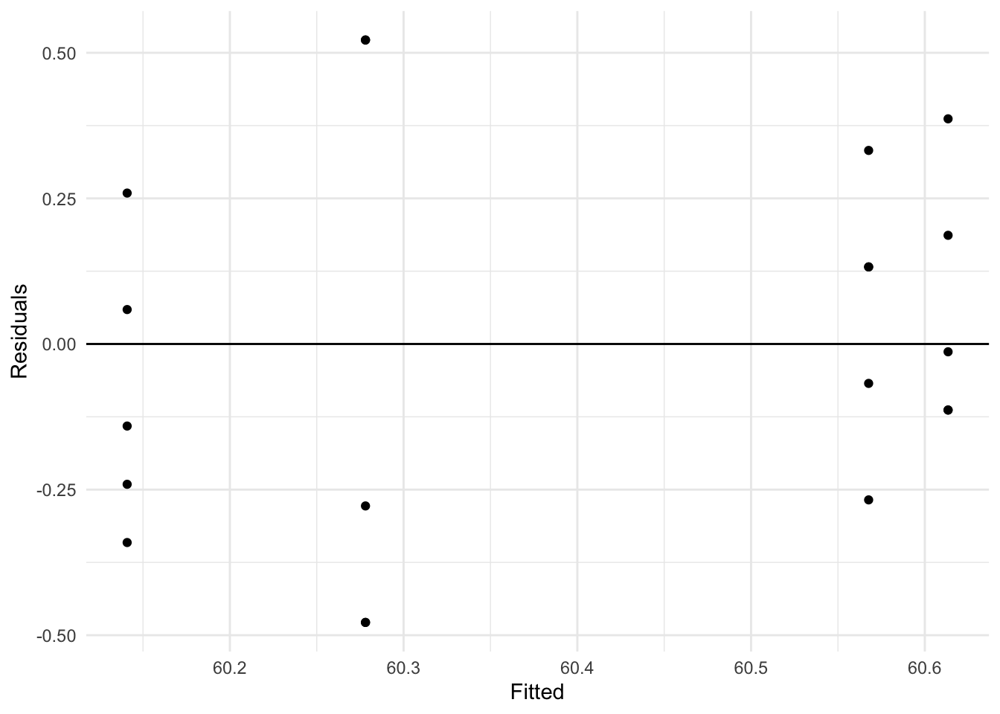

Code
library(conflicted)
library(dplyr)
library(faraway)
library(ggplot2)
library(lme4)Loading required package: MatrixFaraway (2016) Sections 10.1 and 11.1
April 15, 2026
This script demonstrates linear mixed effects models using the lme4 package, by Bates et al. (2015), using the example in Faraway (2016) section 10.1, page 200. This package is the standard package for fitting mixed effects models.
The first dataset we use measures paper brightness (continuous response) depending on which shift operator prepared the pulp.
Loading required package: MatrixAs always we can run ?pulp to get information about the dataset:
# A tibble: 20 × 2
bright operator
<dbl> <fct>
1 59.8 a
2 60 a
3 60.8 a
4 60.8 a
5 59.8 a
6 59.8 b
7 60.2 b
8 60.4 b
9 59.9 b
10 60 b
11 60.7 c
12 60.7 c
13 60.5 c
14 60.9 c
15 60.3 c
16 61 d
17 60.8 d
18 60.6 d
19 60.5 d
20 60.5 d We can see that there are 20 observations of brightness, with 5 measurements for each of 4 operators.
We want to model brightness using an intercept only model with random operator effects.
The model is: \[ y_{ij} = \beta_0 + b_i + \varepsilon_{ij} \] where \(y_{ij}\) is the brightness for the \(j\)-th measurement of the \(i\)-th operator, \(\beta_0\) is the overall mean brightness (fixed effect), \(b_i \sim N(0, \sigma_b^2)\) is the random effect for operator \(i\), and \(\varepsilon_{ij} \sim N(0, \sigma_{\varepsilon}^2)\) is the observation-level error.
We estimate \(\beta_0\) as the fixed effect, and \(\sigma_b^2\) and \(\sigma_{\varepsilon}^2\) as the variance components for the random effects and residuals, respectively.
We fit a model using a REML criterion, and a model using a MLE criterion, to compare the results.
In mixed effects models we need to estimate the variance components (random effects variance and residual variance) in addition to the fixed effects. The standard MLE estimate has a strong downward bias for variance components (it will underestimate them). REML corrects for this bias.
lme4::lmer() Syntax
lme4::lmer() uses the pattern response ~ fixed effects + (random effects | group), data = .... The second argument is the data frame, and REML = FALSE switches from REML to MLE. Here (1 | operator) gives a random intercept for each operator.
Note that the 1 + in the fixed effects is optional since the intercept is included by default, but here it is included explicitly for clarity.
The m_pulp_reml object is of class lmerMod. Let’s examine both fits:
Linear mixed model fit by REML ['lmerMod']
Formula: bright ~ 1 + (1 | operator)
Data: pulp_tbl
REML criterion at convergence: 18.6
Scaled residuals:
Min 1Q Median 3Q Max
-1.4666 -0.7595 -0.1244 0.6281 1.6012
Random effects:
Groups Name Variance Std.Dev.
operator (Intercept) 0.06808 0.2609
Residual 0.10625 0.3260
Number of obs: 20, groups: operator, 4
Fixed effects:
Estimate Std. Error t value
(Intercept) 60.4000 0.1494 404.2We get one fixed effect (the overall mean brightness) and one random effect (the operator-level variation).
DENNIS TO ADD SOME EXPOSITION ON THE STANDARD ERROR OF FIXED EFFECTS HERE
For the random effect we get two variance parameters. The Residual variance is the estimated variance \(\sigma_{\varepsilon}^2\) of the obervation-level errors \(\varepsilon_{ij}\), while the operator variance is the estimated variance \(\sigma_b^2\) of the operator-level random effects \(b_i\). Here the value reported by Std.Dev. is just the square root of the variance (not a standard error of the variance estimate).
We can also see the estimates for the MLE fit:
Linear mixed model fit by maximum likelihood ['lmerMod']
Formula: bright ~ 1 + (1 | operator)
Data: pulp_tbl
AIC BIC logLik -2*log(L) df.resid
22.5 25.5 -8.3 16.5 17
Scaled residuals:
Min 1Q Median 3Q Max
-1.50554 -0.78116 -0.06353 0.65850 1.56232
Random effects:
Groups Name Variance Std.Dev.
operator (Intercept) 0.04575 0.2139
Residual 0.10625 0.3260
Number of obs: 20, groups: operator, 4
Fixed effects:
Estimate Std. Error t value
(Intercept) 60.4000 0.1294 466.7We can see that (as expected) the MLE variance estimates are smaller than the REML estimates, while the fixed effect estimate is the same.
We can directly extract the fixed effect estimates:
# A tibble: 1 × 2
REML MLE
<dbl> <dbl>
1 60.4 60.4The fixed effect estimates here are the same between REML and MLE, only because the design is balanced. Generally they will differ for unbalanced designs.
DENNIS: TO ADD MORE CONTEXT IF NEEDED, CLAIM IS THAT REML VARIANCE ESTIMATES MUST BE SCALAR MULTIPLE OF MLE VARIANCE ESTIMATES IN BALANCED DESIGNS
Usually we don’t extract the random effects estimates directly (since there is only a posterior distribution), but we can extract the conditional modes using the generic method lme4::ranef():
# A tibble: 4 × 5
grpvar term grp condval condsd
<chr> <fct> <fct> <dbl> <dbl>
1 operator (Intercept) a -0.122 0.127
2 operator (Intercept) b -0.259 0.127
3 operator (Intercept) c 0.168 0.127
4 operator (Intercept) d 0.213 0.127Since the conditional distribution is normal, the conditional modes are also the conditional means.
Variance-covariance matrix for the fixed effects:
This is a constant in this case since we are only estimating one fixed effect (the intercept).
We can directly access the estimated residual standard deviation \(\sigma_{\varepsilon}\):
We can access both variance-covariance components (\(\sigma_b^2\) and \(\sigma_{\varepsilon}^2\)):
And the usual generic method coef() function gives us the fixed effect coefficient table:
Since fixed effect estimates for linear mixed models are a special case of solving a generalised least squares (GLS) estimator, we can verify the fixed effect estimate by hand-computing the GLS solution from the estimated variance structure:
[1] 0.06808334 0.10625000components <- tibble::as_tibble(lme4::VarCorr(m_pulp_reml))$vcov extracts estimated variance components from the fitted model. lme4::VarCorr(...) returns random-effect and residual variance information, tibble::as_tibble(...) turns it into a tidy table, and $vcov selects the variance column.Vi <- components[2] * ... builds the \(5 \times 5\) covariance matrix for one operator. diag(5) creates an identity matrix, and matrix(1, nrow = 5, ncol = 5) creates a \(5 \times 5\) matrix of ones.V <- Matrix::bdiag(Vi, Vi, Vi, Vi) creates a block-diagonal covariance matrix for all 4 operators. Matrix::bdiag(...) stacks the operator-level covariance blocks on the diagonal.Z <- rep(1, 20) creates the intercept-only fixed-effect design vector for all 20 observations.Hand-computed GLS estimate of the fixed effect (intercept):
1 x 1 Matrix of class "dgeMatrix"
[,1]
[1,] 60.4Hand-computed standard error (GLS covariance):
This course does not focus on model diagnostics, but the general idea behind these plots is to evaluate whether our model assumptions are met. The default residuals function accounts for the estimated random effects. These residuals can be regarded as estimates of the observation-level errors \(\varepsilon_{ij}\), which is usually what we want for diagnostics:
resid_m_pulp_reml <- residuals(m_pulp_reml)
fitted_m_pulp_reml <- fitted(m_pulp_reml)
diagnostics_tbl <- tibble(residual = resid_m_pulp_reml, fitted = fitted_m_pulp_reml)
ggplot(diagnostics_tbl, aes(sample = residual)) +
stat_qq() +
stat_qq_line() +
labs(x = "Theoretical Quantiles", y = "Residuals") +
theme_minimal()

These plots show that it is a reasonable assumption that the residuals are approximately normally distributed and have constant variance across fitted values.
We can compute residuals by hand to verify:
Verify they match the model output:
Now we fit a model with random slopes. The Panel Study of Income Dynamics (PSID) dataset tracks income over time for individuals. We use log(income) as the response.
Load and examine data:
So this dataset has 1,661 observations on the following 6 variables:
age: age in 1968educ: years of educationsex: sex of individual (F or M)income: annual income in dollarsyear: calendar yearperson: ID number for individual# A tibble: 1,661 × 6
age educ sex income year person
<int> <int> <fct> <int> <int> <int>
1 31 12 M 6000 68 1
2 31 12 M 5300 69 1
3 31 12 M 5200 70 1
4 31 12 M 6900 71 1
5 31 12 M 7500 72 1
6 31 12 M 8000 73 1
7 31 12 M 8000 74 1
8 31 12 M 9600 75 1
9 31 12 M 9000 76 1
10 31 12 M 9000 77 1
# ℹ 1,651 more rowsWe create a new variable cyear, the time relative to 1978
Centering predictors: By centering year at 1978, the intercept in our model will represent log-income in 1978.
We fit models with both random intercept and random slope (person growth rate varies) using both the REML (default) and the biased MLE (REML = FALSE) estimation methods:
(cyear | person) gives both a random intercept and slope for each person.
The model is: \[
\begin{split}
\log(\texttt{income})_{ij} &= \beta_0 + \beta_1 \texttt{cyear}_{j} + \beta_2 \mathbb{1}(\texttt{sex}_{i}=\texttt{M}) + \beta_3 \texttt{age}_{i} + \beta_4 \texttt{educ}_{i}\\
&\quad + \beta_5 \texttt{cyear}_{j}\mathbb{1}(\texttt{sex}_{i}=\texttt{M}) + b_{0i} + b_{1i}\texttt{cyear}_{j} + \varepsilon_{ij}
\end{split}
\] where \(\log(\texttt{income}_{ij})\) corresponds to person \(i\) at time \(j\), and \(\mathbb{1}(\texttt{sex}_{i}=\texttt{M})\) corresponds to the sexM coefficient in the output. The random effects are correlated: \[
\begin{pmatrix} b_{0i} \\ b_{1i} \end{pmatrix}
\sim N\Biggl(
\begin{pmatrix}0\\0\end{pmatrix},
\begin{pmatrix}
\sigma_{b_0}^2 & \sigma_{b_{01}}\\
\sigma_{b_{01}} & \sigma_{b_1}^2
\end{pmatrix}
\Biggr),
\quad
\varepsilon_{ij}\sim N(0,\sigma_\varepsilon^2).
\]
Examine REML fit:
Linear mixed model fit by REML ['lmerMod']
Formula: log(income) ~ cyear * sex + age + educ + (cyear | person)
Data: psid_tbl
REML criterion at convergence: 3819.8
Scaled residuals:
Min 1Q Median 3Q Max
-10.2310 -0.2134 0.0795 0.4147 2.8254
Random effects:
Groups Name Variance Std.Dev. Corr
person (Intercept) 0.2817 0.53071
cyear 0.0024 0.04899 0.19
Residual 0.4673 0.68357
Number of obs: 1661, groups: person, 85
Fixed effects:
Estimate Std. Error t value
(Intercept) 6.674211 0.543323 12.284
cyear 0.085312 0.008999 9.480
sexM 1.150312 0.121292 9.484
age 0.010932 0.013524 0.808
educ 0.104209 0.021437 4.861
cyear:sexM -0.026306 0.012238 -2.150
Correlation of Fixed Effects:
(Intr) cyear sexM age educ
cyear 0.020
sexM -0.104 -0.098
age -0.874 0.002 -0.026
educ -0.597 0.000 0.008 0.167
cyear:sexM -0.003 -0.735 0.156 -0.010 -0.011The above summary is more complex than the previous example because we have more fixed effects and a more complex random effects structure. The Correlation of Fixed Effects table shows the correlation between the fixed effect estimates. The covariance matrix of the fixed effects estimates can easily be derived from this.
The Random effects table shows the variance components \(\sigma_{b_0}^2\) and \(\sigma_{b_1}^2\) for the random intercept and random slope \(b_{1i}\), as well as their correlation (from which \(\sigma_{b_{01}}\) can be calculated), and the residual variance \(\sigma_\varepsilon^2\).
We can directly access the variance-covariance matrix of fixed effects:
6 x 6 Matrix of class "dpoMatrix"
(Intercept) cyear sexM age
(Intercept) 2.952003e-01 9.887065e-05 -6.841728e-03 -6.419660e-03
cyear 9.887065e-05 8.099019e-05 -1.075138e-04 2.572365e-07
sexM -6.841728e-03 -1.075138e-04 1.471185e-02 -4.311368e-05
age -6.419660e-03 2.572365e-07 -4.311368e-05 1.828907e-04
educ -6.954571e-03 2.976876e-08 2.136982e-05 4.831984e-05
cyear:sexM -2.023534e-05 -8.099199e-05 2.313032e-04 -1.681985e-06
educ cyear:sexM
(Intercept) -6.954571e-03 -2.023534e-05
cyear 2.976876e-08 -8.099199e-05
sexM 2.136982e-05 2.313032e-04
age 4.831984e-05 -1.681985e-06
educ 4.595265e-04 -2.838170e-06
cyear:sexM -2.838170e-06 1.497587e-04We can compare the fixed effect estimates from the REML and MLE fits:
# A tibble: 6 × 3
names REML MLE
<chr> <dbl> <dbl>
1 (Intercept) 6.67 6.68
2 cyear 0.0853 0.0852
3 sexM 1.15 1.15
4 age 0.0109 0.0109
5 educ 0.104 0.104
6 cyear:sexM -0.0263 -0.0262Note that here the fixed effect estimates differ slightly between REML and MLE, which is to be expected.
Finally we can access at the standard errors of the fixed effects:
(Intercept) cyear sexM age educ cyear:sexM
0.543323402 0.008999455 0.121292411 0.013523710 0.021436569 0.012237594 As above, we can examine the variance-covariance of random effects:
Groups Name Std.Dev. Corr
person (Intercept) 0.530713
cyear 0.048988 0.187
Residual 0.683574 The standard deviation of the random intercept tells us how much variability there is in initial log-income across individuals. Since income is on a log-scale, this values is multiplicative—95% of incomes are between \(\exp(-2\sigma_{b_0})\)= 0.35 and \(\exp(2\sigma_{b_0})\)= 2.89 times the overall mean income in 1978.
The standard deviation of the random slope tells us how much variability there is in income growth rates across individuals.
A low correlation value tells us that the slope of income growth over time, is minimally effected by the initial salary (intercept).
R version 4.4.2 (2024-10-31)
Platform: x86_64-apple-darwin20
Running under: macOS Sequoia 15.7.5
Matrix products: default
BLAS: /Library/Frameworks/R.framework/Versions/4.4-x86_64/Resources/lib/libRblas.0.dylib
LAPACK: /Library/Frameworks/R.framework/Versions/4.4-x86_64/Resources/lib/libRlapack.dylib; LAPACK version 3.12.0
locale:
[1] en_US.UTF-8/en_US.UTF-8/en_US.UTF-8/C/en_US.UTF-8/en_US.UTF-8
time zone: Australia/Melbourne
tzcode source: internal
attached base packages:
[1] stats graphics grDevices datasets utils methods base
other attached packages:
[1] lme4_1.1-38 Matrix_1.7-1 ggplot2_4.0.2 faraway_1.0.9
[5] dplyr_1.2.0 conflicted_1.2.0
loaded via a namespace (and not attached):
[1] gtable_0.3.6 jsonlite_2.0.0 compiler_4.4.2 renv_1.1.7
[5] tidyselect_1.2.1 Rcpp_1.1.1 scales_1.4.0 splines_4.4.2
[9] boot_1.3-31 yaml_2.3.12 fastmap_1.2.0 lattice_0.22-6
[13] R6_2.6.1 labeling_0.4.3 generics_0.1.4 knitr_1.51
[17] rbibutils_2.4.1 MASS_7.3-61 tibble_3.3.1 nloptr_2.2.1
[21] minqa_1.2.8 RColorBrewer_1.1-3 pillar_1.11.1 rlang_1.1.7
[25] utf8_1.2.6 cachem_1.1.0 xfun_0.56 S7_0.2.1
[29] memoise_2.0.1 cli_3.6.5 withr_3.0.2 magrittr_2.0.4
[33] Rdpack_2.6.5 digest_0.6.39 grid_4.4.2 rstudioapi_0.18.0
[37] lifecycle_1.0.5 nlme_3.1-166 reformulas_0.4.4 vctrs_0.7.1
[41] evaluate_1.0.5 glue_1.8.0 farver_2.1.2 rmarkdown_2.30
[45] tools_4.4.2 pkgconfig_2.0.3 htmltools_0.5.9 packages <- c("conflicted", "dplyr", "faraway", "ggplot2", "lme4")
for (pkg in packages) {
cit <- citation(pkg)
# Check if multiple citations
if (length(cit) > 1) {
cat("- **", pkg, "**:\n", sep = "")
for (i in seq_along(cit)) {
cit_text <- format(cit[i], style = "text")
cat(" - ", cit_text, "\n\n", sep = "")
}
} else {
cit_text <- format(cit, style = "text")
cat("- **", pkg, "**: ", cit_text, "\n\n", sep = "")
}
}conflicted: Wickham H (2023). conflicted: An Alternative Conflict Resolution Strategy. R package version 1.2.0, https://github.com/r-lib/conflicted, https://conflicted.r-lib.org/.
dplyr: Wickham H, François R, Henry L, Müller K, Vaughan D (2026). dplyr: A Grammar of Data Manipulation. R package version 1.2.0, https://github.com/tidyverse/dplyr, https://dplyr.tidyverse.org.
faraway: Faraway J (2025). faraway: Datasets and Functions for Books by Julian Faraway. R package version 1.0.9, https://github.com/julianfaraway/faraway.
ggplot2: Wickham H (2016). ggplot2: Elegant Graphics for Data Analysis. Springer-Verlag New York. ISBN 978-3-319-24277-4, https://ggplot2.tidyverse.org.
lme4: Bates D, Mächler M, Bolker B, Walker S (2015). “Fitting Linear Mixed-Effects Models Using lme4.” Journal of Statistical Software, 67(1), 1-48. doi:10.18637/jss.v067.i01 https://doi.org/10.18637/jss.v067.i01.